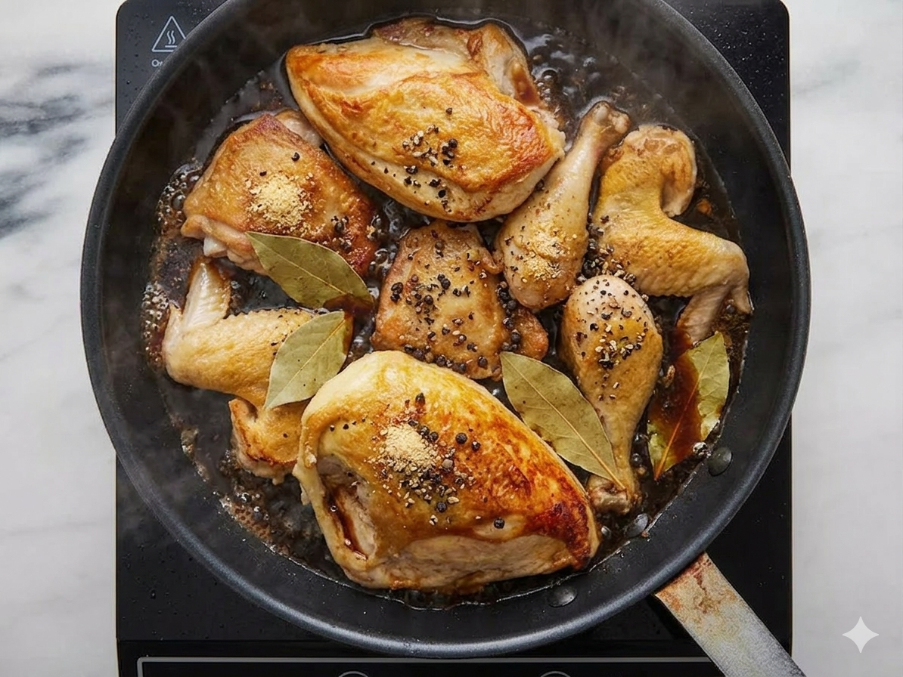

:max_bytes(150000):strip_icc():format(webp)/128699-famous-chicken-adobo-ddmfs-step-1-051-3x4-eea5478222484cd1a2813c3c0ee7cea8.jpg)
:max_bytes(150000):strip_icc():format(webp)/128699-famous-chicken-adobo-ddmfs-step-2-013-4x3-b4721a162983489eb9dfd23d6d731a04.jpg)

:max_bytes(150000):strip_icc():format(webp)/128699-famous-chicken-adobo-DDMFS-4x3-2da8cfc2ccc44ddfb1d4cb1bf1a28e48.jpg)
:max_bytes(150000):strip_icc():format(webp)/128699-famous-chicken-adobo-DDMFS-4x3-2da8cfc2ccc44ddfb1d4cb1bf1a28e48.jpg)
Description:
Imagine a large, heavy frying pan filled with different pieces of chicken—legs, wings, and thighs. Each piece has been cooked until the skin is a crispy, golden brown, looking almost like the color of a shiny copper penny. The chicken is sitting in a shallow pool of dark, glossy sauce that looks thick and savory, like a rich syrup made of soy sauce and vinegar.
Right on top of one of the drumsticks sits a single, bright green bay leaf, which stands out against the dark browns of the meat. You can see little black specks of cracked pepper and tiny bits of fried garlic scattered everywhere, clinging to the chicken and floating in the sauce. It looks like a warm, salty, and comforting meal that has just finished simmering on the stove.
Ingredients:
Steps:
